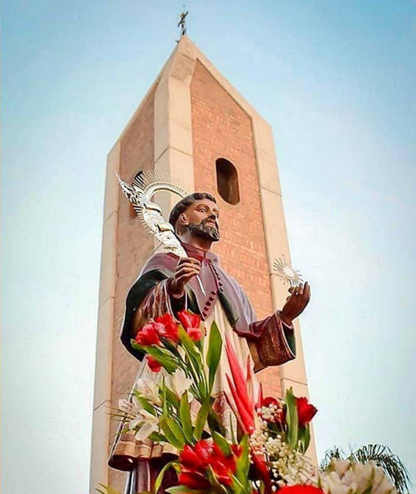
Catedral de Orán
Sede de la diócesis. Custodia las imágenes de San Ramón Nonato y de la Virgen del Carmen, ambos patronos de la ciudad desde su fundación.
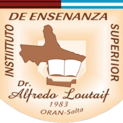
Revista Cultural Turismo · 1.er Año · 2026Revista Cultural · Salta · Argentina
Tradiciones y costumbres del norte argentino: fe, identidad, folclore y carnaval — el patrimonio cultural vivo de su gente.
Entrar a las tradiciones ↓Un recorrido por las raíces de San Ramón de la Nueva Orán: su historia, sus fiestas, su folclore, su cocina, su turismo y juegos para los más chicos. Elegí por dónde empezar.
Más de dos siglos: cómo y cuándo nació la ciudad.
Patronales de San Ramón, corsos, tinkus y caporales.
Folclore, instrumentos, Pachamama y devoción popular.
Sabores del norte y oficios hechos a mano.
Plazas, Monumento a Güemes, museo y Casa de la Cultura.
Colorear y buscar las diferencias.
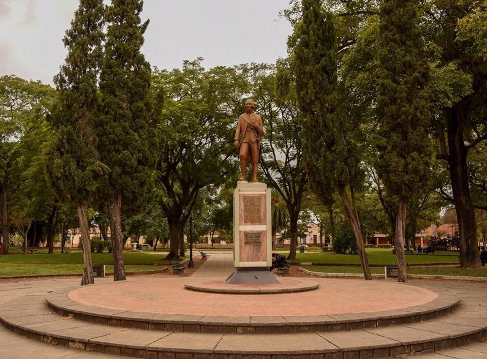
San Ramón de la Nueva Orán fue fundada el 31 de agosto de 1794 por el español Ramón García de León y Pizarro, gobernador de la Intendencia de Salta del Tucumán. La bautizó así por una doble razón: esa fecha es el día de San Ramón Nonato y él mismo había nacido en la ciudad de Orán, en el norte de África.
Fue concebida como una ciudad estratégica de frontera: debía reforzar el nexo entre Salta y la villa de Tarija y consolidar el control del territorio. Años antes, en 1779, los franciscanos habían establecido en la zona la reducción de Nuestra Señora de las Angustias del Zenta; ese origen militar y misional dejó una marca profunda en su religiosidad. Una Cédula Real aprobó formalmente la fundación el 4 de mayo de 1797.
Cada 31 de agosto, Orán celebra a la vez el cumpleaños de la ciudad y la fiesta de su santo patrono.
El fundador. Ramón García de León y Pizarro (Orán, 1745 – Charcas, 1815) provenía de una familia militar y noble; ostentó los títulos de Marqués de Casa Pizarro y Vizconde de la Nueva Orán. Para poblar la ciudad trasladó alrededor de 150 familias con su ganado. Más tarde fue presidente de la Real Audiencia de Charcas.
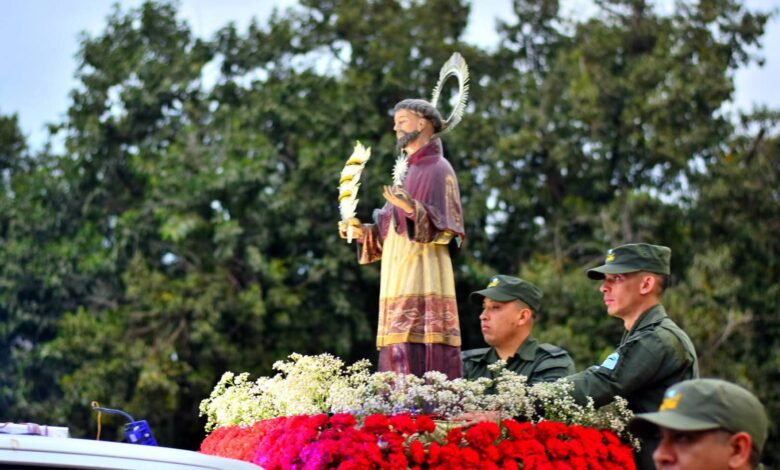
Las Fiestas Patronales de San Ramón de la Nueva Orán constituyen la celebración religiosa, cultural y social más importante de la ciudad. Se realizan cada año durante agosto y culminan el 31 de agosto, fecha en que se conmemora la fundación de la ciudad y la festividad de su santo patrono, San Ramón Nonato.
Durante varias semanas se desarrollan la novena, peregrinaciones, misas, procesiones y encuentros comunitarios. Miles de fieles participan de la tradicional procesión por las calles, manifestando su fe y devoción.
«Un acontecimiento que reúne a toda la comunidad y atrae visitantes de distintos puntos de Salta y Bolivia.»
También incluyen festivales musicales, ferias de artesanos, exposiciones y desfiles cívicos, militares y gauchos.
La religiosidad popular ocupa un lugar central en la vida de los oranenses. Además de las fiestas patronales, se celebran numerosas festividades del calendario católico:
Estas manifestaciones reflejan la profunda fe de la comunidad y fortalecen los lazos sociales. La participación de familias, instituciones educativas, centros vecinales y agrupaciones gauchas es una característica distintiva.
La devoción mariana es especialmente intensa: cada barrio honra a su virgen o santo con novenas, serenatas y procesiones, en las que la imagen recorre las calles entre flores, velas y bandas de música.
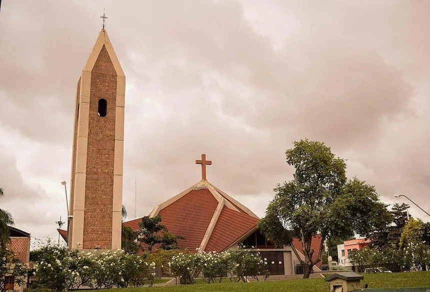
Los templos de Orán marcan el pulso de la fe de la ciudad. Estos son algunos de los principales:

Sede de la diócesis. Custodia las imágenes de San Ramón Nonato y de la Virgen del Carmen, ambos patronos de la ciudad desde su fundación.
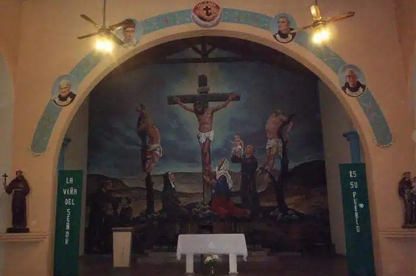
Un templo de barrio muy querido, con su gran mural del Calvario y la leyenda “La viña del Señor es su pueblo”.
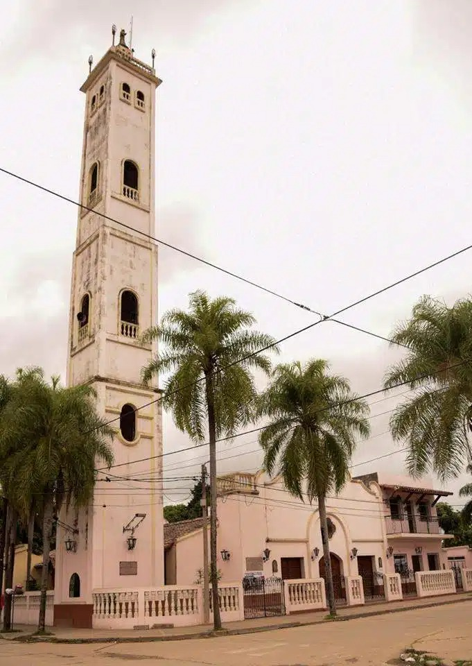
Dedicada a Santa Teresita del Niño Jesús, se reconoce por su esbelta torre campanario y las palmeras que la rodean.
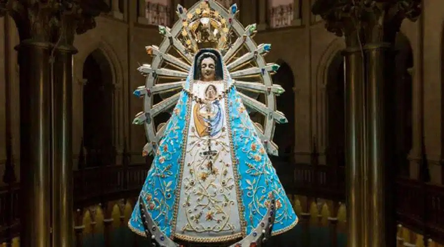
Bajo la advocación de la patrona de la Argentina, reúne a la comunidad en torno a la devoción mariana, tan arraigada en Orán.
Junto al calendario católico late una espiritualidad más antigua, heredada de los pueblos andinos: el respeto sagrado por la tierra y por la naturaleza de las Yungas.
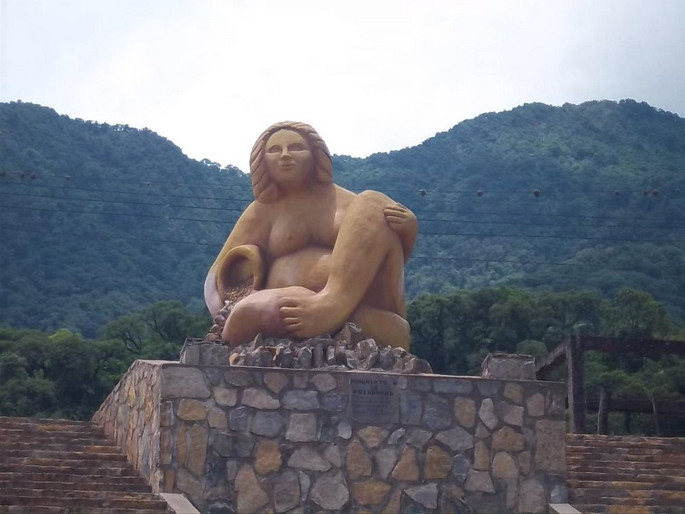
Cada 1° de agosto se celebra el día de la Pachamama, la “madre tierra”. Las familias cavan un pozo —la apacheta— y le ofrendan comida, bebida, hojas de coca y cigarrillos, en agradecimiento por las cosechas y pidiendo protección para el año que comienza.
A esta raíz andina se suman leyendas del monte que aún se cuentan en los parajes rurales: el Familiar, el Coquena —protector de las vicuñas y los rebaños— o la Telesita, que se recuerda con bailes y promesas. Relatos que enseñan a respetar la selva, el agua y los animales.
En el norte, la fe católica y las creencias originarias no compiten: se entrelazan en una misma manera de habitar el mundo.
El folclore es una de las expresiones más representativas de Orán: canciones del trabajo rural, la vida en el monte y el amor por la tierra, transmitidas de generación en generación.
Uno de los festivales folclóricos más importantes de Salta. Se realiza en agosto, dentro de las Fiestas Patronales y Fundacionales de la ciudad, con entrada libre y gratuita.
Reúne a artistas locales, provinciales y nacionales en varias jornadas de música y danza, junto a peñas, ferias de artesanos y la Fiesta de las Colectividades.
La gastronomía del Noroeste Argentino (NOA) es parte del patrimonio cultural de la región. Sus sabores y técnicas se transmiten de generación en generación, conservando tradiciones de los pueblos originarios y aportes criollos. Entre sus ingredientes más usados están el maíz, la papa, la carne vacuna y las especias típicas de la zona.
Masa de maíz rellena con carne vacuna o de pollo condimentada, envuelta en hojas de chala y cocida en agua hirviendo. Infaltable en festividades familiares, celebraciones patrias y reuniones comunitarias.
A base de choclo rallado, cebolla, queso y condimentos; se cocina en olla o envuelta en las hojas del choclo. Suave y cremosa, representa la importancia del maíz en los pueblos andinos desde tiempos ancestrales.
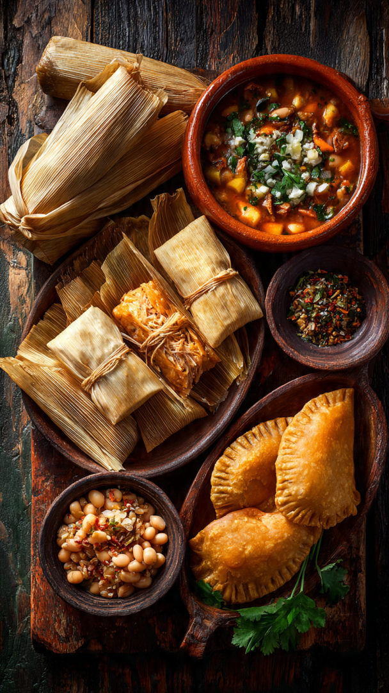
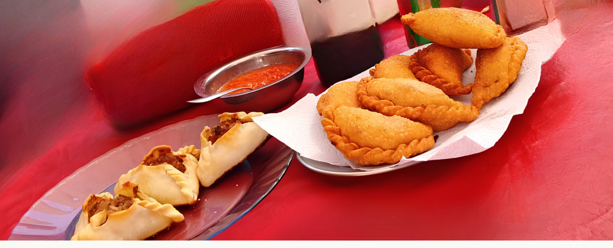
Las del NOA se preparan con carne cortada a cuchillo, cebolla, papa, huevo duro y condimentos. Cada provincia tiene su propia receta, lo que las vuelve una verdadera expresión de identidad cultural.
Uno de los platos más emblemáticos: maíz blanco, porotos, zapallo, carne vacuna, cerdo y embutidos. Se cocina varias horas y se disfruta en fechas patrias como el 25 de Mayo y el 9 de Julio.
La cocina regional suma una gran variedad de platos típicos: guiso de maíz, carbonada, mote, chilcán y preparaciones con productos locales, que reflejan la relación entre las comunidades y los recursos naturales.
El chilcán es una preparación andina de harina de maíz tostado (o de algarroba) mezclada con agua o leche, a veces endulzada con azúcar o miel. Aportaba energía y se hacía con lo que había a mano: una costumbre heredada de los pueblos originarios.
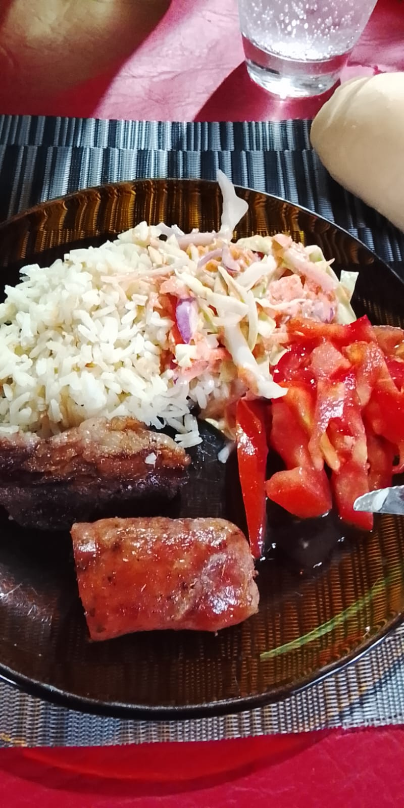
La gastronomía regional no solo es una forma de alimentación: es una manifestación cultural que conserva historias, costumbres y saberes, y se vuelve un atractivo turístico y cultural de gran valor.
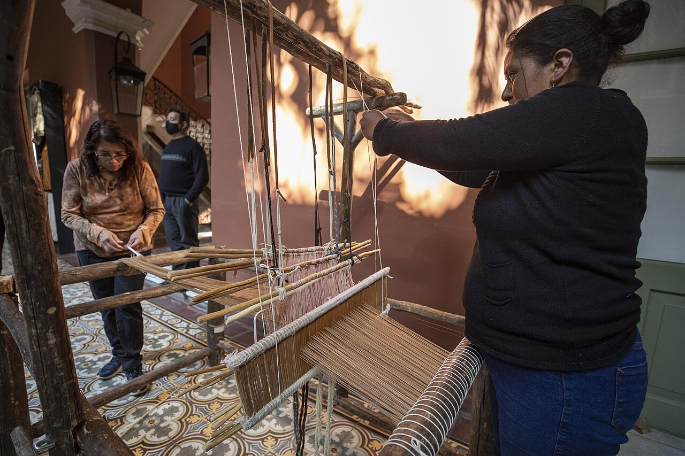
El trabajo artesanal mantiene vivos saberes transmitidos de generación en generación. En los talleres familiares y en las ferias de las fiestas se ofrecen piezas únicas, cada una con la huella de su autor:
Cada poncho y cada vasija guardan horas de trabajo paciente: la artesanía es memoria que se puede tocar.
Numerosas instituciones preservan y difunden las tradiciones locales, formando a niños, jóvenes y adultos en el patrimonio oranense.
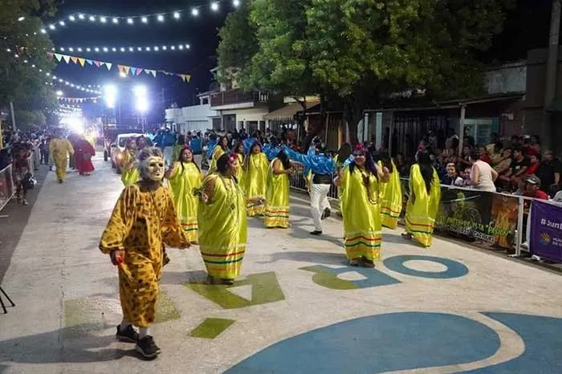
A lo largo del año, Orán despliega un calendario propio que combina fe, identidad y encuentro comunitario. Casi todo con entrada gratuita.
Enero – Febrero
Festival con más de 40 años de historia; reúne agrupaciones de localidades vecinas y de distintas partes del país.
Abril
Galas artísticas, talleres y stands de emprendedores, gastronómicos y artesanos.
Acto el 19 de abril en Plaza Santa Marta y feria popular el día 20.
Julio
Convocan a jóvenes de toda la diócesis de Orán en honor a la Virgen María.
Encuentro interamericano de danza con cuerpos de baile del departamento.
Agosto
Ofrendas a la tierra madre en la apacheta; reúne a las comunidades originarias.
El 30, “Festi Plaza”; el 31, desfile y procesión de San Ramón Nonato. Festi Orán y Fiesta de las Colectividades.
Agosto – Septiembre
Concurso de alumnos del último año del secundario en torno a una temática anual.
Noviembre
En Plaza San Martín, con academias locales y más de 30 emprendedores.
Un paseo por los lugares con más historia e identidad de San Ramón de la Nueva Orán. La mayoría están a pocas cuadras, en torno al casco céntrico.
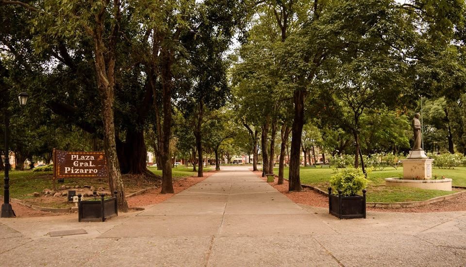
La Plaza San Martín es el corazón de la ciudad: allí se montan el escenario de “Las Voces de Orán”, las ferias de artesanos y la Fiesta de las Colectividades. La Plaza General Pizarro suma árboles añosos y fuentes, y la Plaza Santa Marta rinde homenaje a los pueblos originarios.
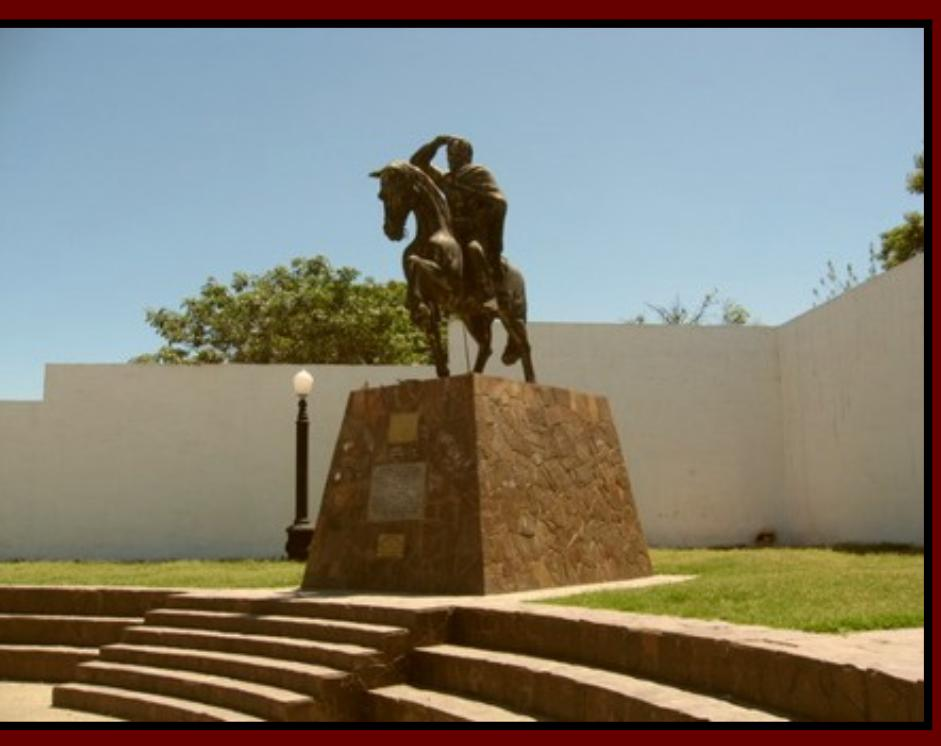
Homenaje a Martín Miguel de Güemes, el héroe gaucho que defendió la frontera norte durante la independencia. Es uno de los monumentos más importantes de Orán y se encuentra cerca de la Iglesia Virgen del Valle, en el barrio Güemes.
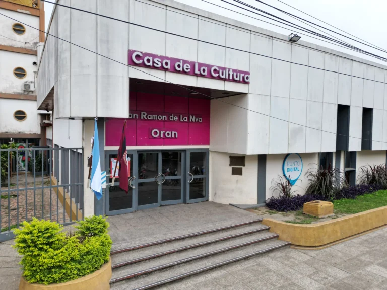
Creada en 1983, es el centro de la vida cultural oranense: ofrece talleres, anfiteatro, salas de exposición, una biblioteca con Punto Digital y un cine INCAA con proyección 3D que estrena en simultáneo con todo el país.
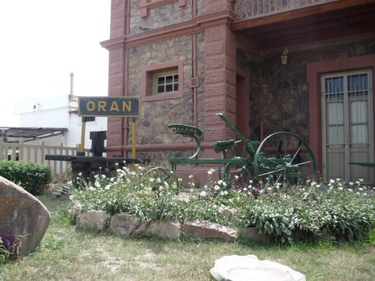
Conserva la historia y la arqueología de la zona: piezas de culturas indígenas, objetos del período colonial, armamento histórico y elementos de la antigua navegación por el río Bermejo.
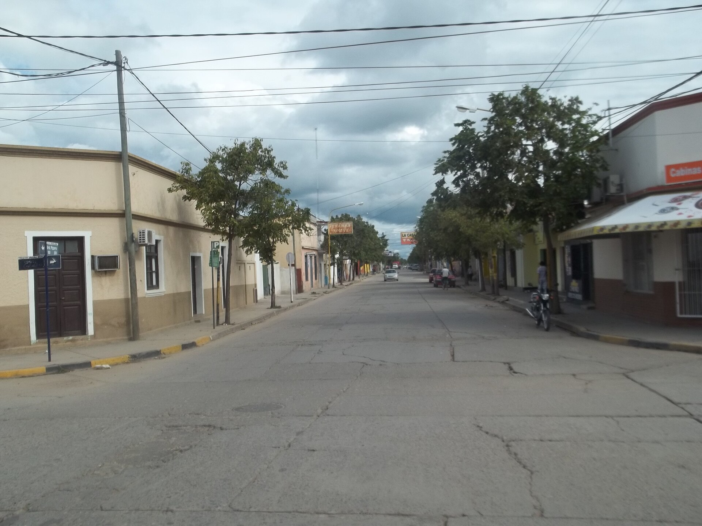
Alrededor de la plaza y de la Catedral se extiende la trama fundacional, con comercios, instituciones y la vida cotidiana de los oranenses. Un buen punto de partida para caminar la ciudad.
Orán también es la puerta de entrada a paseos imperdibles de las Yungas y la zona:
Dos juegos para descubrir la cultura de Orán jugando: pintá una escena del norte y encontrá las diferencias. ¡A divertirse!
Elegí un color, ajustá el pincel y pintá la lámina con el mouse o el dedo.
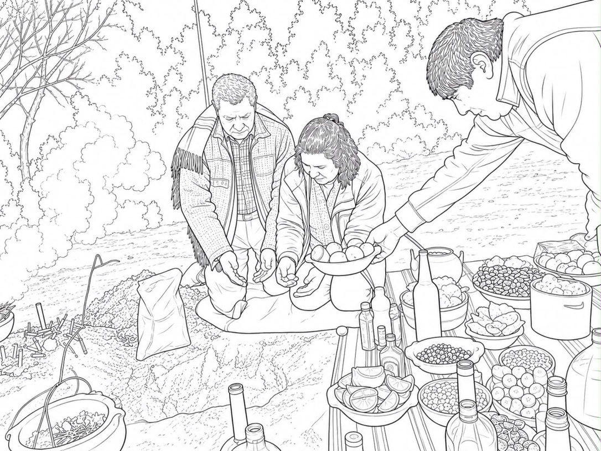
Consejo: con el balde tocá un espacio para rellenarlo; con el pincel pintás libremente.
La foto de la derecha es la Catedral de Orán, pero le cambiaron y agregaron 9 cosas. Comparala con la de la izquierda y tocá en la de la derecha cada diferencia que encuentres. 0 / 9
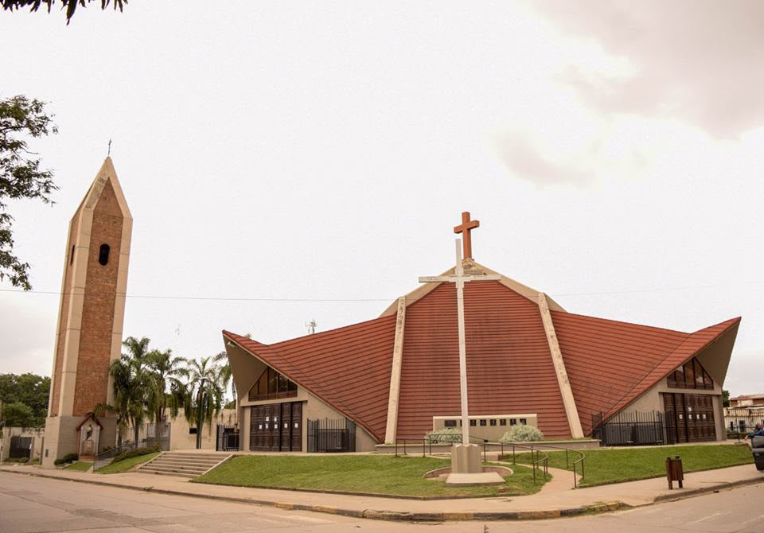
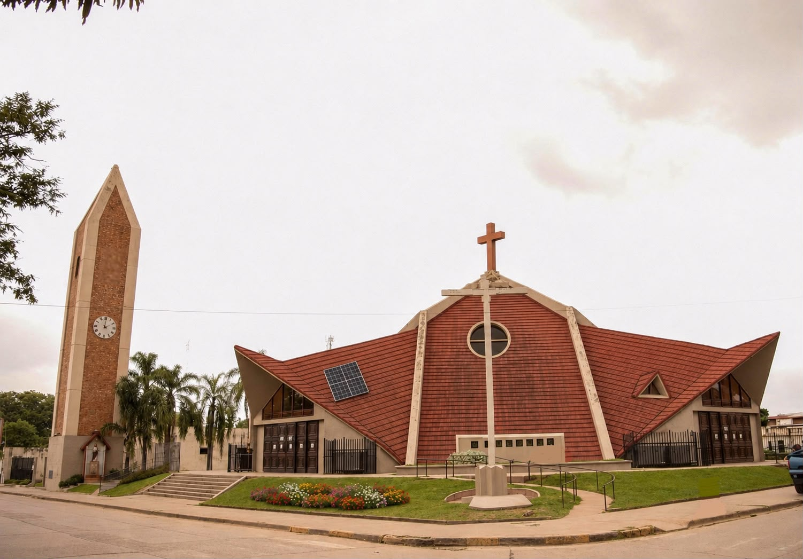
¡Muy bien! Encontraste las 9 diferencias.
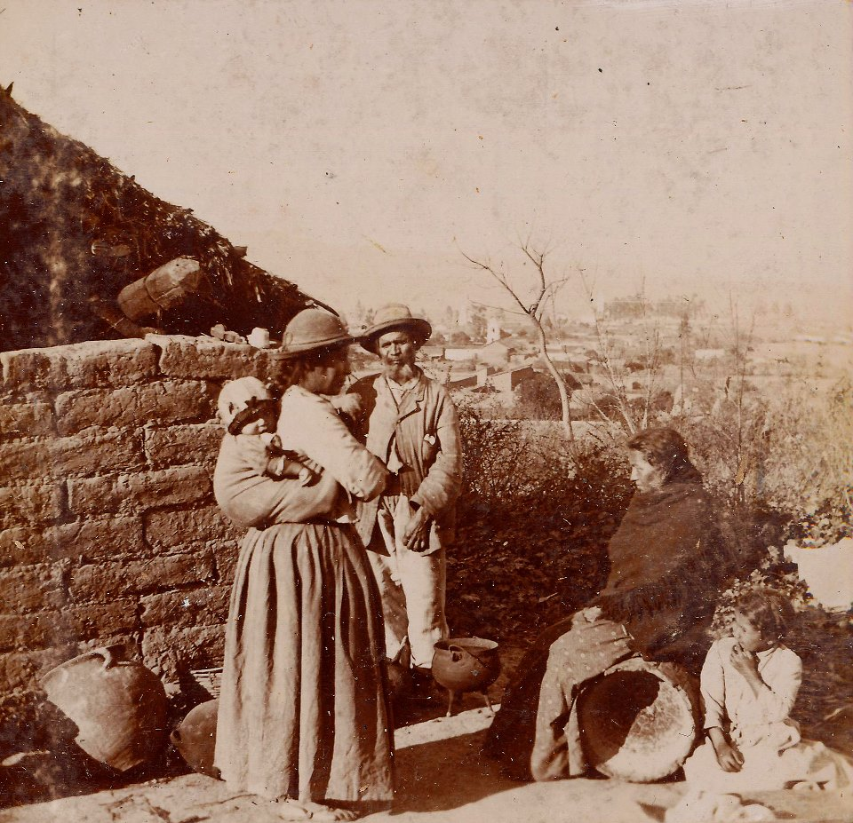
La cultura de San Ramón de la Nueva Orán es el resultado de la fusión entre las tradiciones indígenas, criollas, españolas y andinas. Esta riqueza se manifiesta en sus festividades, música, gastronomía, danzas y expresiones religiosas, convirtiendo a Orán en uno de los centros culturales más importantes del norte argentino.
En el departamento Orán conviven, hasta hoy, comunidades de pueblos originarios —kollas, guaraníes (ava guaraní) y wichís—, cuya lengua, espiritualidad y saberes sobre el monte siguen alimentando la identidad de toda la región.
Su identidad se fortalece a través de la fe, la solidaridad, el sentido de pertenencia y el orgullo por sus raíces, que continúan transmitiéndose de generación en generación.